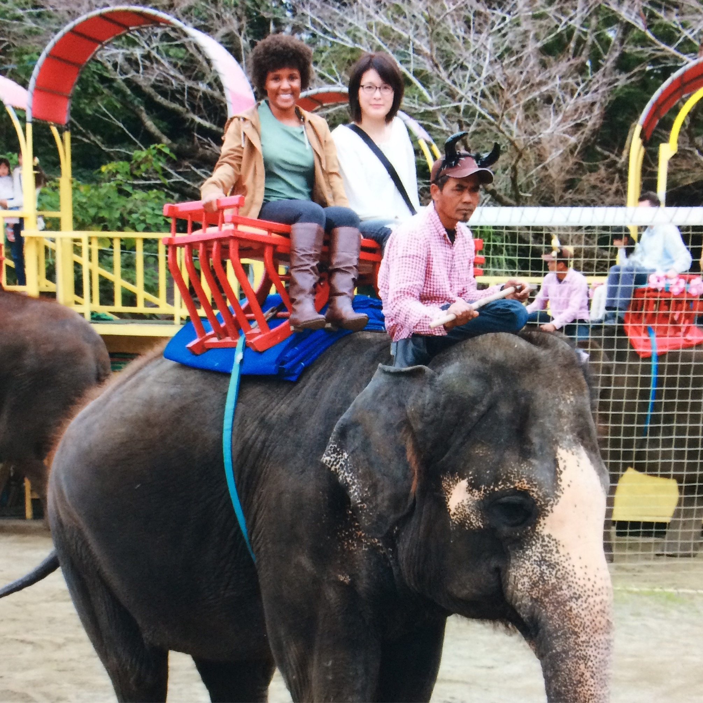
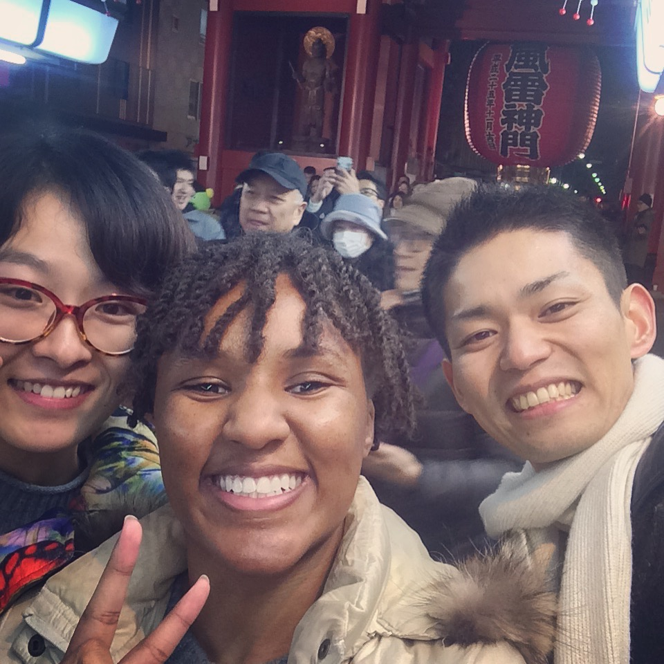
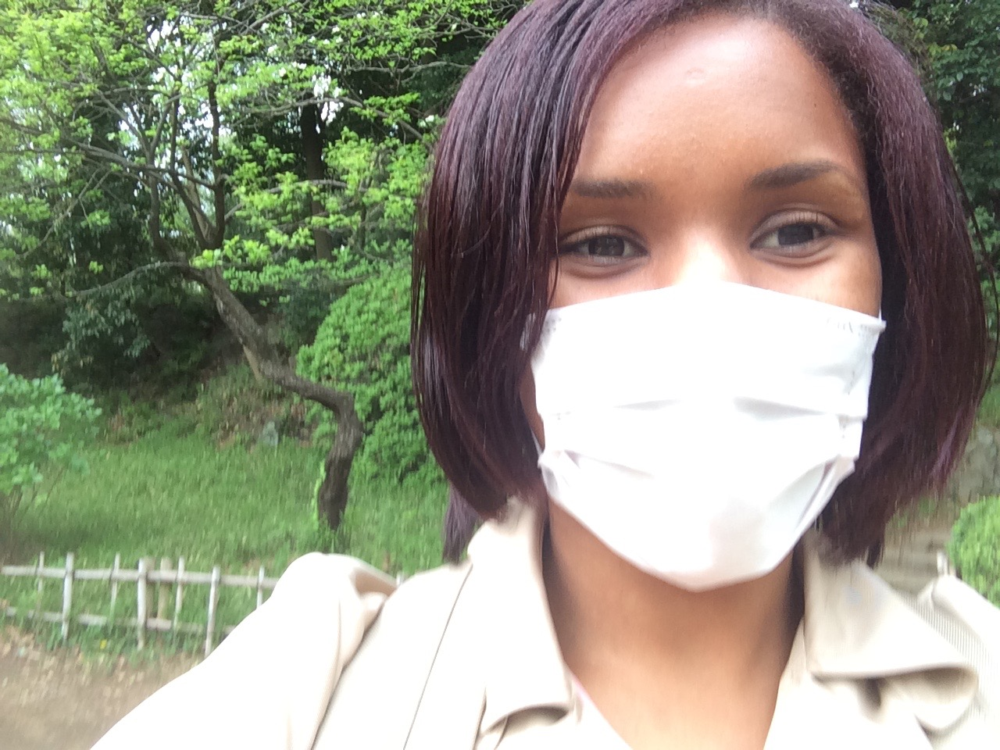
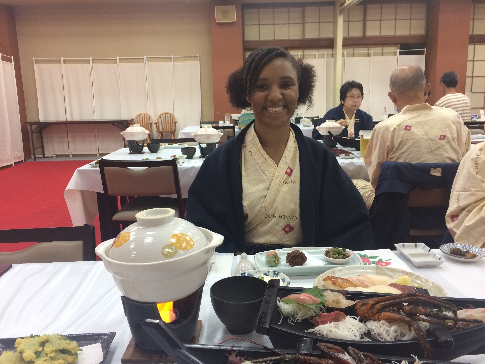
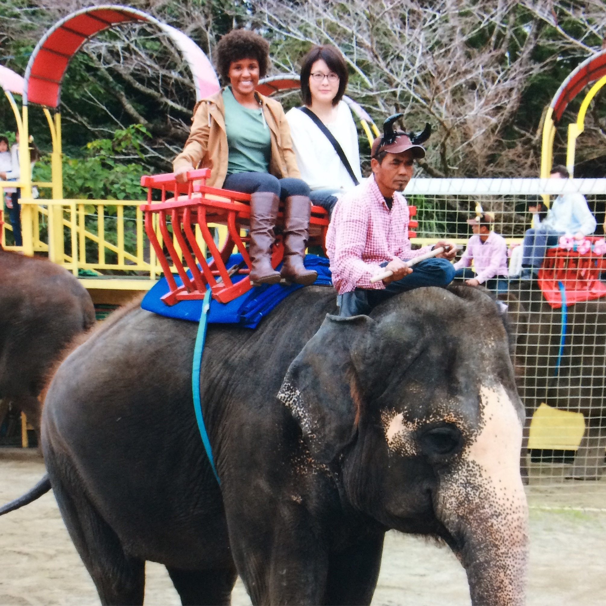
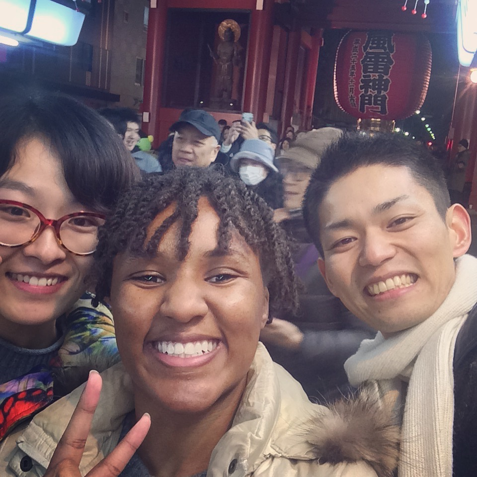
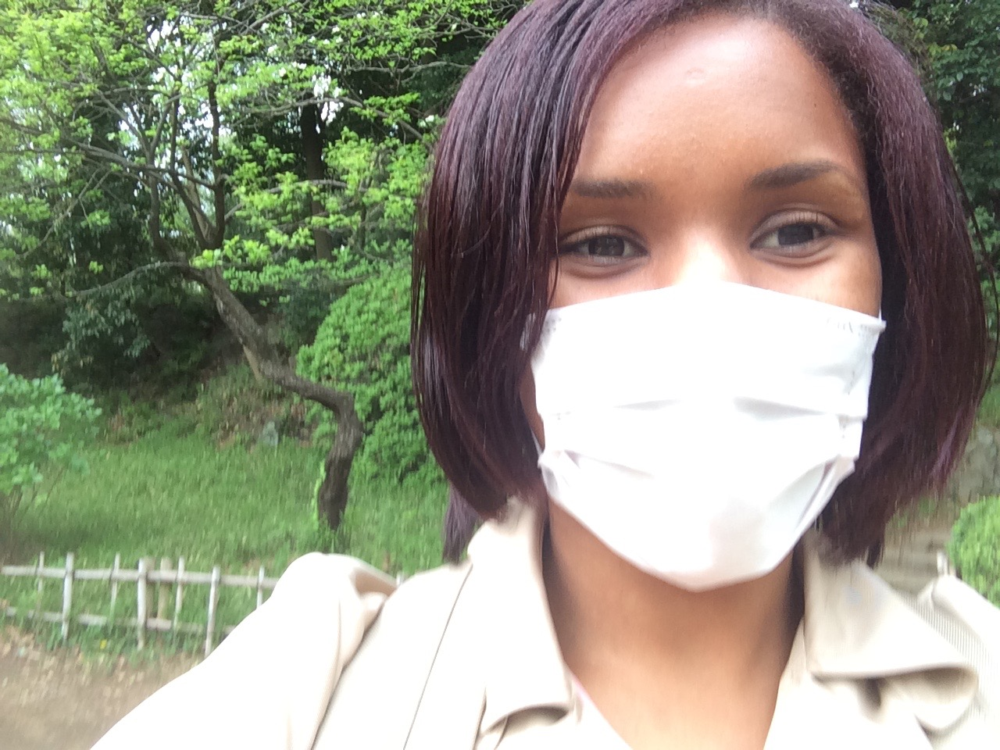
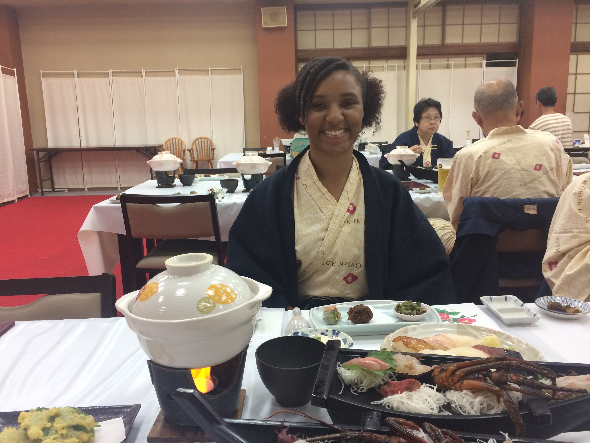

Japan: Fall 2016 - Spring 2017
 







Studying Abroad in Japan
My study abroad experience was a rollercoaster- but for me the highs most certainly outweighed the lows. I had my heart set on going to Japan, and I was willing to do anything and everything to make that happen. I started the planning process about a year before my actual study abroad program began, and I was met with a lot of obstacles that I had to overcome. As a computer science major, Texas Tech did not offer any programs in Japan at the time that aligned with my degree- so I decided to pick up a Japanese language minor and attend a Japanese language school for 9 months while doing a long-distanced supervised individual studies course (CS 4300) simultaneously to keep from falling too far behind. I attended KCP International Language School located in Tokyo, Japan, and I am the first student from Texas Tech University to ever attend this school. I went through the entire process of getting the program and program credits approved by Texas Tech University so that I could make my international experience my own.
I arrived in Japan at an airport in a small town near the coast, and I caught a bus from there to Tokyo. The bus ride was a couple of hours long and there wasn’t much of a view in the countryside, so I slept most of the trip until I arrived at the bus station around nightfall where I was greeted by my host mother. She helped me load my things into her car, and we started making our way to my new home for the next few months. I sat there in awe as she drove around the city and I was mesmerized. I was literally frozen in shock from excitement. The flashing lights, the tall buildings, the people, the Japanese signs- this was it. I was actually in Tokyo, and it was everything that I dreamed it would be!
The honeymoon phase of my culture shock lasted for about 2 months, and during these 2 months everything was fascinating to me. I loved sleeping on a futon on the floor, eating everything with chopsticks, and taking off my shoes and yelling “I’m home!” in Japanese to be greeted with “Welcome home!” after school every single day. Getting shoved into carts on the subway, trying foods that I couldn’t pronounce, and even occasionally having to use traditional style Japanese toilets (not the fancy ones we’ve all heard of but the toilets that are literally holes in the floor), and I loved it all. However, after those 2 and a half months life started to hit me all at once. I had to move out from my host family’s home as per my school’s regulations, the homesickness that was almost nonexistent before was starting to set in, I wasn’t doing that well in school, and I started becoming more aware of myself and how much I stood out in my surroundings. To further elaborate, it suddenly hit me that as an African American female with natural/curly hair in a country as homogenous as Japan, I stuck out like a sore thumb. People were staring at me literally all the time, and I was so excited about being in Japan that I was completely oblivious to that fact before. Most of the stares were warm friendly stares out of curiosity, but I did get the occasional look of disgust from time to time (typically from elder people). It also didn’t help that during that time the United States was going through presidential elections, and since all eyes were on the U.S.- all eyes were also on me. I can’t even tell you the number of times some random person or a classmate would just start talking to me about Trump or Clinton out of nowhere. The election was all over the tv, all over the news, and now as an American in a foreign country with such close ties to America, I had to deal will all of the jokes, questions, concerns, and everything else related to the election on top of the other stress I was dealing with. At that point I just wanted to go home; I didn’t want to be in Japan anymore.
Despite wanting to call it quits and return from my trip early, I decided to persevere and push through the storm- and eventually the storm passed. I started to get to know the people at the new share house I was living at, I made more friends at school, and I began to travel around to other parts of Japan outside of Tokyo. I did a bunch of site seeing and touristy things that I didn’t have time to do before, and my host family remained in touch with me and I joined them on a few camping and skiing trips around Japan. I learned to love and appreciate Japan not just for Tokyo’s fast paced city life, but for its history and deep-rooted traditional culture as well. I’m glad that I continued to stay in Japan even after the tough times that I faced because I developed so many great relationships, had so many eyeopening experiences, and created a ton of memories that I will cherish forever.